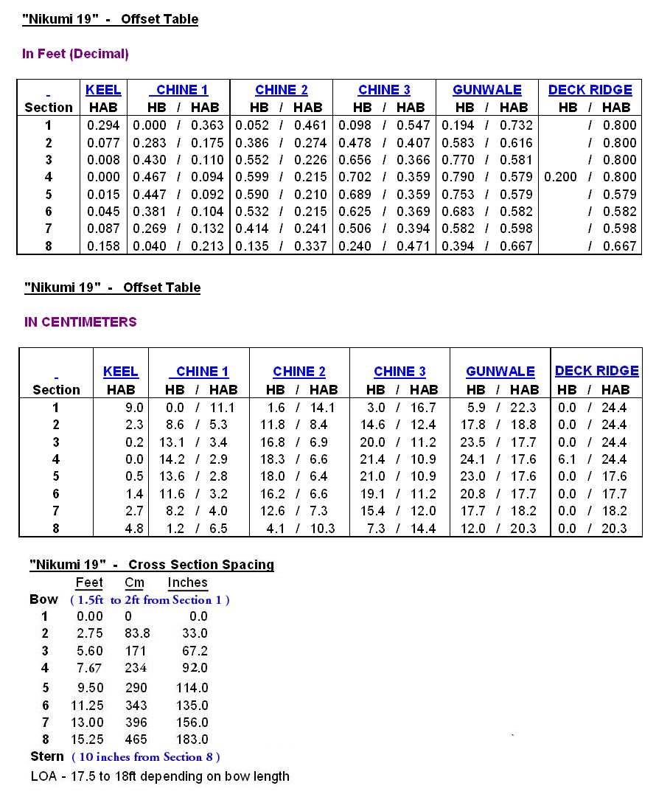

| Nikumi 19 Offsets / Drawings ( 2 of 2) | Menu Previous Page Next Page |
|

The "Nikumi 19" Offsets are displayed in both Feet (decimal) and Centimeters (cm). The cross section spacing begins with cross section 1 which is placed at 0 ft. Sections 2 thru 8 are spaced starting from cross section 1. The bow is a variable length from 1.5ft to 2+ft forward of cross section 1 ..depending on builder preferance . The stern is 10 inches aft of cross section 8. The LOA is approx. 18ft.
|
|